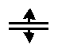

打开大纲视图
关闭“大纲视图”(Outliner)
“大纲视图”(Outliner)以大纲形式显示场景中所有对象的层次列表。可以展开和收拢层次中分支的显示；层次的较低级别在较高级别下缩进。它是 Maya 的两个主要场景管理编辑器之一（另一个是 Hypergraph）。
“大纲视图”(Outliner)还会显示视图面板中通常隐藏的对象，如默认摄影机或没有几何体的节点（例如，着色器和材质）。可以使用相应“显示”(Display)和“显示”(Show)菜单中的项目，控制“大纲视图”(Outliner)中显示的节点。
使用该表可了解带注释图形的每个编号区域：
| 大纲视图中的元素 | 允许执行的操作 |
|---|---|
|
1 - 显示(Display)和显示(Show)菜单 |
过滤大纲视图中显示的内容。请参见大纲视图(Outliner)菜单。 |
|
2 - 渲染设置过滤器 |
按所在的渲染层过滤场景中的对象。请参见在大纲视图中过滤并仅显示渲染设置成员。选择，以显示此过滤器。 也可在对象的节点上单击鼠标右键以打开“渲染设置”(Render Setup)菜单，然后选择用 标识对象所属的集合命令。 |
|
3 搜索(Search)字段 |
搜索场景中的任何节点。请参见搜索节点。 |
|
4 - 组和层次 |
创建和更改节点层次。通过使用鼠标中键并拖动父节点下的子节点，可以创建层次。使用鼠标中键在组或层次内拖动节点以更改其顺序。 |
|
5 - 材质 |
显示并使用材质和着色器。请参见大纲视图(Outliner)上下文菜单中的材质节点命令。 |
|
6 - 隐藏对象 |
选择视图面板中隐藏的对象。按 H 键以切换其可见性。 |
|
7 - 集 |
编辑集成员身份，请参见创建和编辑集。 |
|
8 - 资产 |
使用 资产。在“资产”(Asset)节点上单击鼠标右键，可打开“资产”(Asset)菜单。 |
|
9 - 被引用文件 |
使用文件引用。在引用节点或大纲视图的空白区域上单击鼠标右键，可打开“引用”(Reference)菜单。请参见大纲视图(Outliner)上下文菜单。 还可以在要导出为被引用文件的节点上单击鼠标右键，然后设置其选项。请参见将当前选择导出为引用选项(Export Selection as Reference Options)。 |
|
场景集合 |
使用场景集合。在集合节点上单击鼠标右键，可打开“场景集合”(Scene Assembly)菜单。请参见大纲视图(Outliner)上下文菜单。 |
下表显示了大纲视图中的基本任务：
| 目标 | 操作 |
|---|---|
|
选择对象。 |
在“大纲视图”(Outliner)中单击对象节点名称。如果是复杂场景，相对于尝试在视图面板中单击对象而言，在“大纲视图”(Outliner)中单击对象名称来选择对象通常更为容易。 |
|
选择多个对象。 |
在“大纲视图”(Outliner)中按住 Shift 键并单击或按住 Ctrl 键并单击对象节点名称。前者将添加到选择，而后者则启用和禁用上一选择。 若要获取收拢组的内容（例如绑定层次），请在大纲视图中选择组，然后使用 Maya 主菜单中的。 |
|
展开或收拢节点下级别。 |
单击节点名称旁边的加号 或减号 。 |
|
展开或收拢节点下的所有级别（查看所有节点的快捷方法）。 |
按住 Shift 键并单击节点名称旁边的加号 或减号 。 |
|
在大纲视图中平移。 |
按住 Alt 键并使用鼠标中键拖动，或按住 (MacOS) Option 键并使用鼠标中键拖动。 若要快速平移，请按住 Ctrl + Alt 键并单击鼠标中键进行拖动，或按住 Ctrl + Option (MacOS) 键并单击鼠标中键进行拖动。 |
|
使节点成为其他节点的子节点（与其结成父子关系）。 |
使用鼠标中键拖动并将其放置在要成为该节点父节点的节点上。这也可以是某个组的变换节点。 如果无法在“大纲视图”(Outliner)中同时看到这两个节点，请改用编辑 > 父对象(Edit > Parent)或按 P 键。 |
|
更改层次中的节点顺序。 |
使用鼠标中键拖动并将其放置在其他两个节点之间。 |
|
将节点从其父节点中移出（与其断开父子关系）。 |
在“大纲视图”(Outliner)的空白区域中按住鼠标中键并拖动子节点，或者将其拖动到另一个要成为其父对象的节点上。 也可以选择子节点，然后选择编辑 > 断开父子关系(Edit > Unparent)或按 Shift+P。 |
|
搜索节点。 |
在“大纲视图”(Outliner)顶部的“搜索”(Search)字段中键入节点名称。有关搜索选项的详细信息，请参见搜索节点。 |
|
查找选定对象的节点。 |
在视图面板中选择对象，然后在“大纲视图”(Outliner)中按 F 键查找其节点。 |
|
重命名节点。 |
双击该节点名称，或者选中它并按 Enter 键。 在节点名称中，除下划线 (_) 和井号 (#) 之外，其他所有标点符号都是非法字符。 |
|
在大纲视图中更改节点名称的颜色。 |
在“属性编辑器”(Attribute Editor)中，单击“变换”(Transform)或“形状”(Shape)选项卡，选择，然后选择要使用的颜色。 您可以选择，从而在大纲视图中使用默认颜色，而无需在属性编辑器中更改设置。 |
|
过滤显示的对象类型。 |
从“大纲视图”(Outliner)的子菜单中选择选项。 |
|
显示指定给每个对象的材质。 |
选择“显示 > 指定的材质”(Display > Assigned Materials)。 指定的材质显示在对象下方。如果指定了多种材质，则着色器将分组到“材质”(Materials)标题下。 |
|
显示或隐藏节点。 |
若要在视图面板中隐藏节点，请选择该节点，然后按 H 键。在“大纲视图”(Outliner)中，节点名称为灰色。再次按 H 键即可显示。 若要在“大纲视图”(Outliner)隐藏节点，请选择它，然后选择“显示 > 在大纲视图中隐藏 > 隐藏”(Display > Hide In Outliner > Hide)。 由于通过这种方式隐藏的节点不显示在“大纲视图”(Outliner)中，因此必须先选择此菜单中的“忽略‘在大纲视图中隐藏’”(Ignore 'Hidden In Outliner')暂时显示它，或者从视图面板或其他编辑器中选择它，然后才能将其取消隐藏。再次显示之后，选择该节点，然后选择“取消隐藏”(Unhide)更改其隐藏状态。 |
|
在“属性编辑器”(Attribute Editor)中打开节点。 |
双击节点名称旁的图标。 |
|
在大纲视图中显示属性（通道）。 |
启用“显示 > 属性(通道)”(Display > Attributes (Channels))。 属性的显示还可以使用“大纲视图”(Outliner)的“显示 > 属性”(Show > Attributes)子菜单进行限制。 |
|
显示或隐藏节点上的属性。 |
单击节点名称旁的圆形加号 () 或减号 ()。 可以进一步展开多值属性。 属性值无法在大纲视图中编辑，请改用属性编辑器或通道盒。 |
|
在表达式编辑器中打开属性。 |
双击属性名称。 |
|
在浮动窗口中，打开“大纲视图”(Outliner)的另一个实例。 |
选择。在此设置的选项（例如，使用不同的搜索或过滤选项）不会影响固定的大纲视图。 |
|
拆分“大纲视图”(Outliner)窗口。 |
若要水平或垂直分割“大纲视图”(Outliner)，请选择，然后选择“水平分割”(Split Horizontally)或“垂直分割”(Split Vertically)。 拖动窗口底部或侧边的分割条。 当指针停留在分割条上方时，光标将变为拖动  指示器。 若要取消分割窗口，请向后拖动分割条。 注： 用于垂直分割大纲视图的选项仅在 Maya 主大纲视图(Outliner)（。其他大纲视图（例如“曲线图编辑器”(Graph Editor)大纲视图或“摄影表”(Dope Sheet)大纲视图）只能水平分割。
|